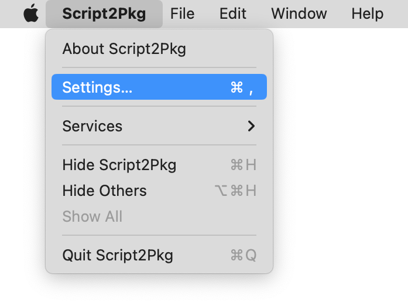
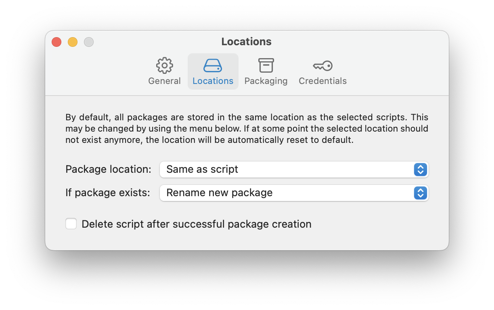
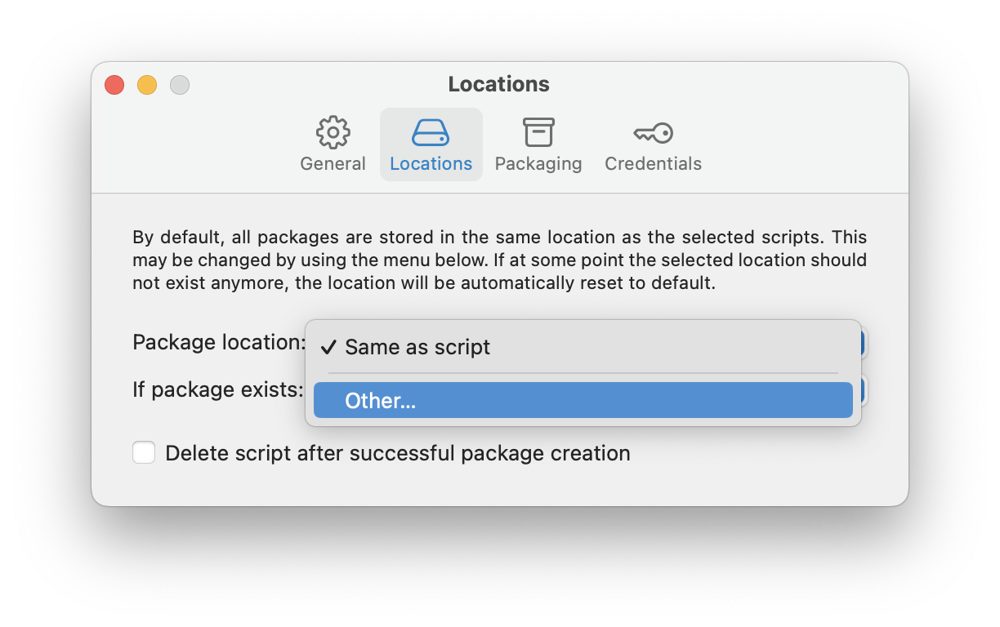
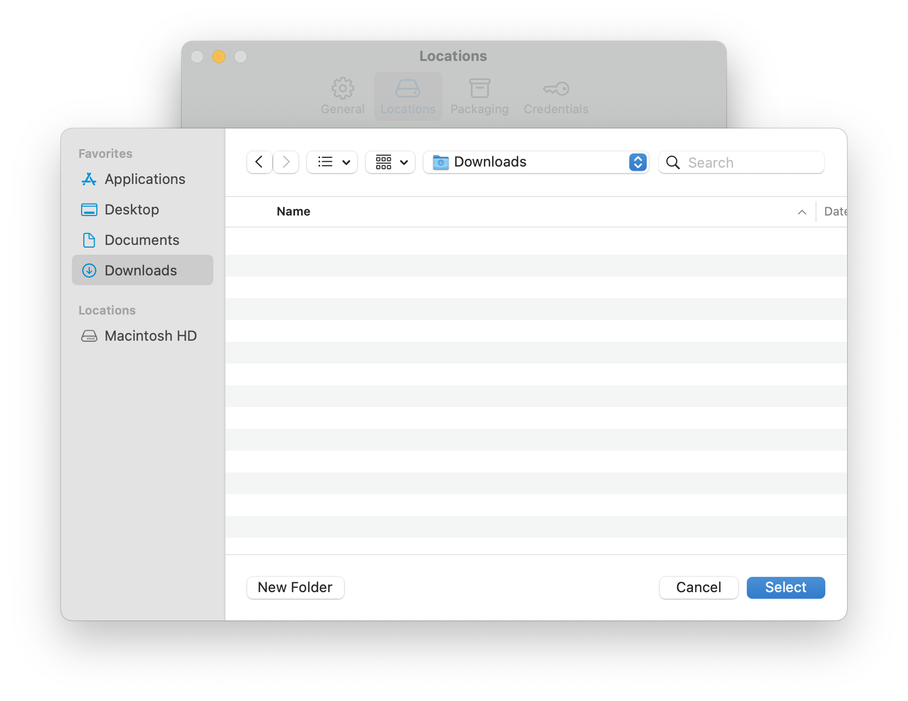
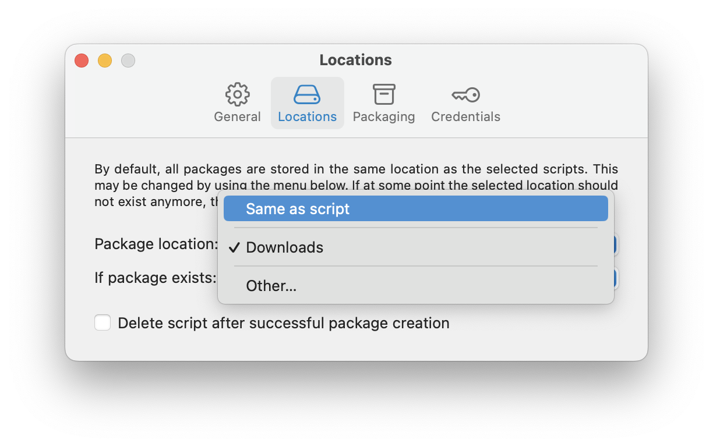

Script2Pkg
Script2Pkg
Script2Pkg
Choosing a package location
By default, new packages will be stored in the same location as the selected script(s). If you want to choose an alternate storage location, use the following procedure:
1. Go to the Script2Pkg menu and select Settings…

2. Select the Locations option.

To change the location where packages are stored following their creation, select the Package location: drop-down menu and select a new location.


Reverting to Default Settings
To change back to the default location, select the Package location: drop-down menu and select the Same as script option.
